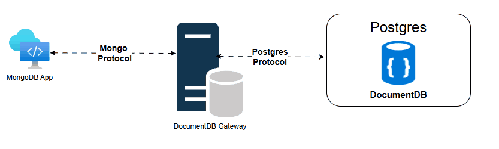

DocumentDB Gateway¶
Overview¶
The DocumentDB Gateway acts as a protocol translation layer between MongoDB clients and a PostgreSQL backend. It interprets MongoDB wire protocol, maps commands to PostgreSQL operations, and manages session handling, transactions, cursor-based paging, and TLS termination.
¶
MongoDB Request Translation¶
The gateway converts MongoDB operations into PostgreSQL equivalents.
Example: insertMany → PostgreSQL BATCH INSERT.
Authentication & Session Management¶
- Supports SCRAM authentication.
- Authenticates against PostgreSQL credentials.
- Translates SCRAM flows to Postgres operations.
- Maintains sessions per user to enforce scoped permissions.
User Management¶
- MongoDB commands like
createUser,updateUser,dropUserare mapped to PostgreSQL. - Roles supported:
readAnyDatabase,readWriteAnyDatabase. - PostgreSQL enforces access policies.
Transactions¶
- Transactions tied to sessions via
transaction_number. - Managed through a
TransactionStore: - Tracks states:
Started,Committed,Aborted. - Prevents duplicates/conflicts.
- Uses PostgreSQL's
BEGIN,COMMIT,ROLLBACK. - Includes auto-cleanup for expired transactions.
Paging & Cursors¶
- Mongo-style cursor paging → PostgreSQL
LIMIT/OFFSET. - Returns
cursorIdand first result batch. getMorefetches subsequent pages.CursorStoremanages cursor lifecycle and cleanup.
Pluggable Telemetry¶
- Supports custom telemetry backends via trait implementation.
- Logging, metrics, tracing supported.
- OpenTelemetry plugin support planned.
Load Balancing & Failover (Planned)¶
- Planned read scaling via replica distribution.
- Writes routed to primary.
- Failover handling through:
- Primary detection
- Reconnect logic
- Transaction recovery via
RecoveryToken
Getting started with DocumentDB Gateway¶
To get started with the DocumentDB Gateway, follow these steps:
- Build the Gateway: Build the DocumentDB Gateway using the provided Dockerfile.
bash docker build . -f .github/containers/Build-Ubuntu/Dockerfile_gateway -t <image-tag> - Run the Gateway: Run the DocumentDB Gateway in a Docker container.
bash docker run -dt -p 10260:10260 -e USERNAME=<username> -e PASSWORD=<password> <image-tag> - Connect to the Gateway: Use Mongosh to connect to the DocumentDB Gateway.
bash mongosh localhost:10260 -u <username> -p <password> \ --authenticationMechanism SCRAM-SHA-256 \ --tls \ --tlsAllowInvalidCertificates